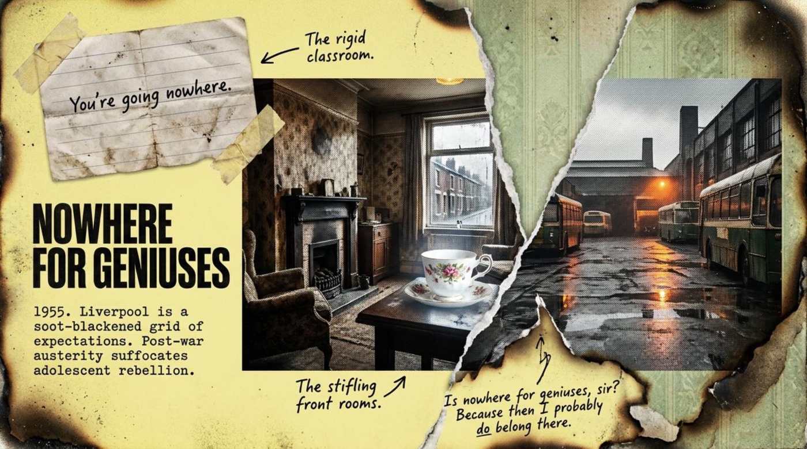
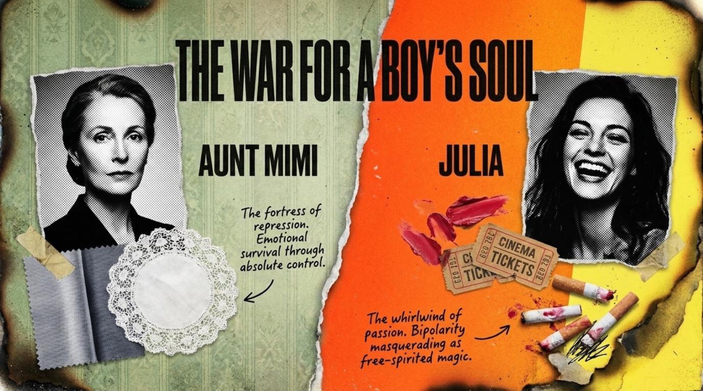
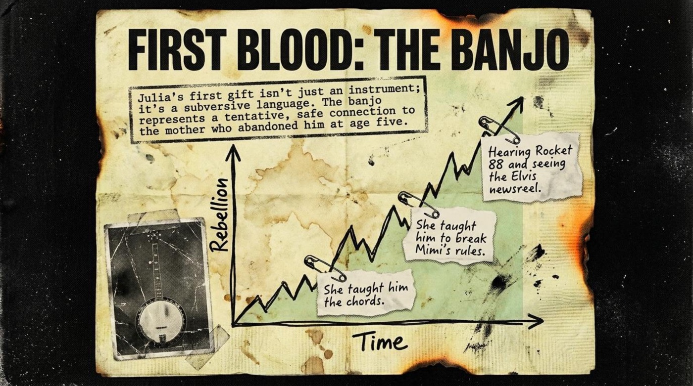
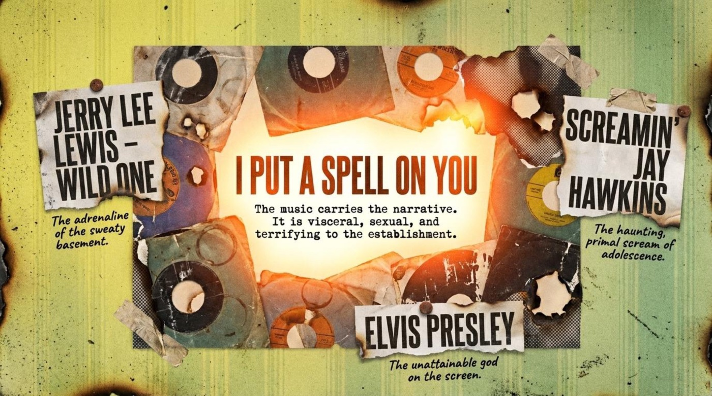
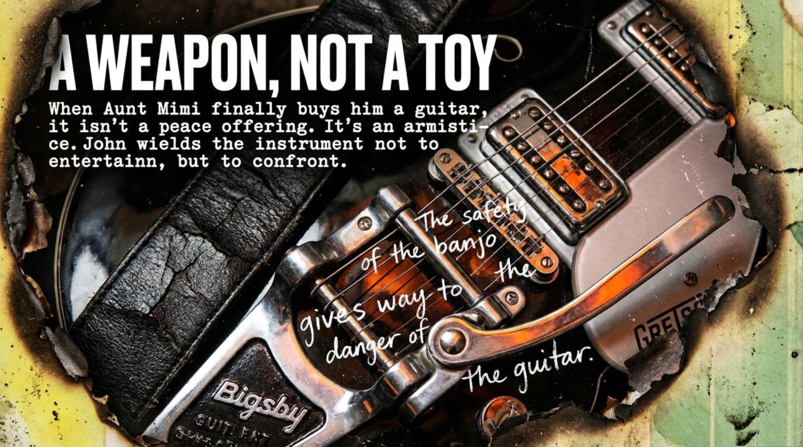
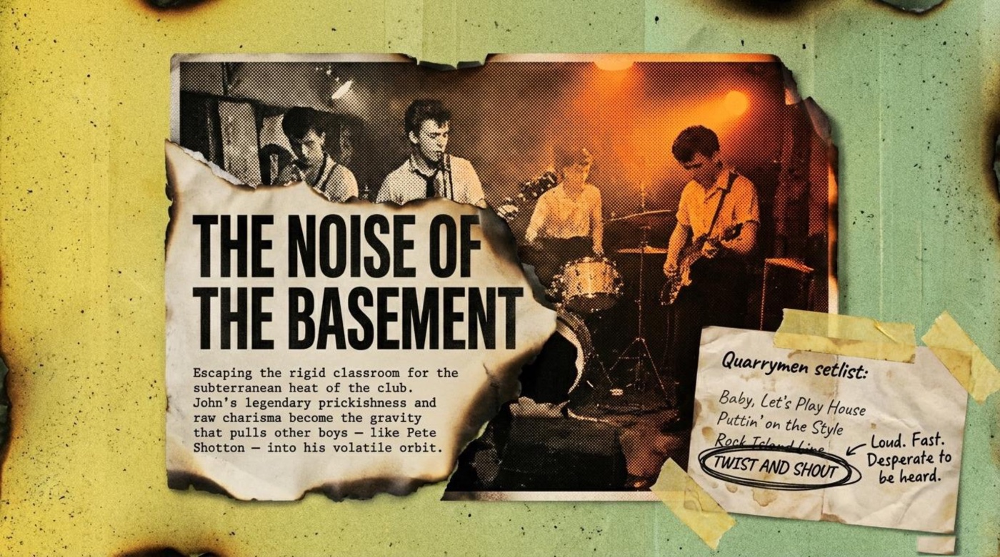
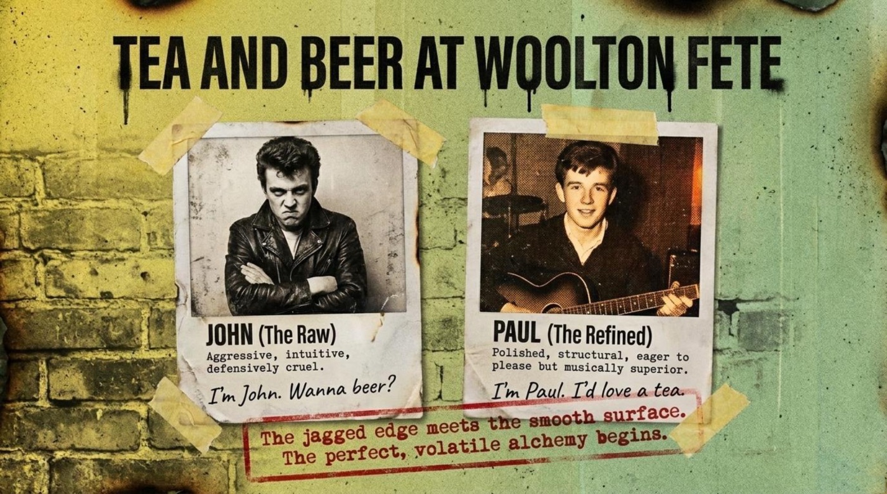
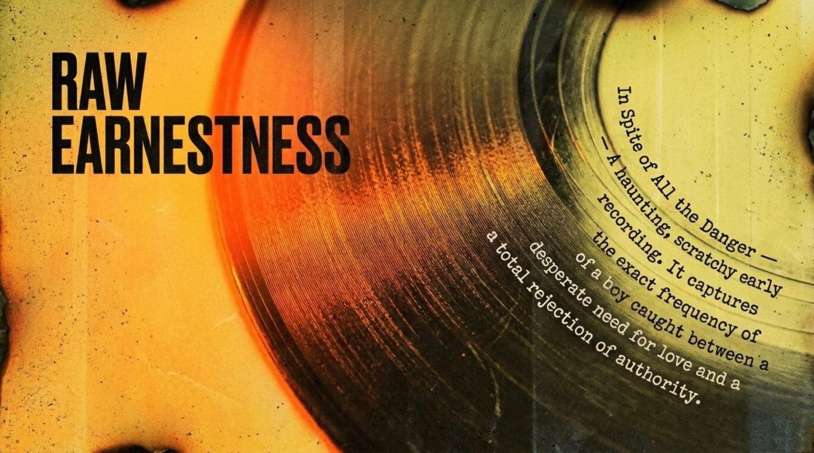
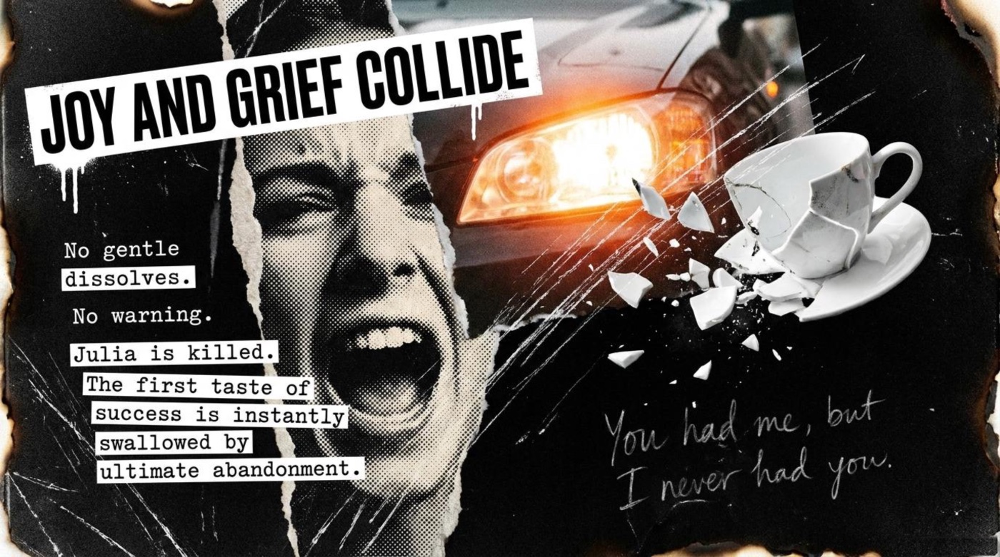
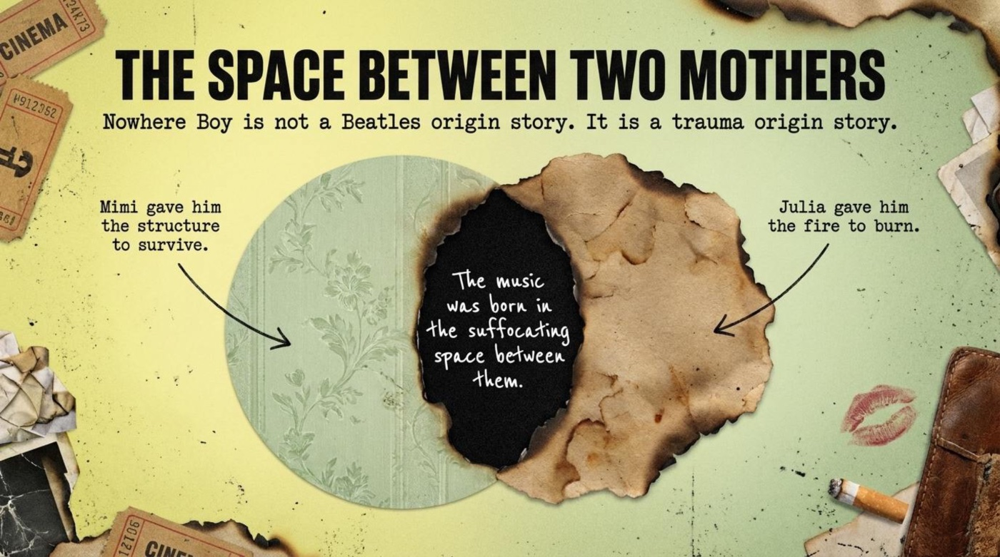

⚡ Interactive word-match challenge — opens in a new tab
📚 Film English · Music History · Vocabulary in Context
A Wound That Never Healed: Learning the Language of Rebellion with Nowhere Boy (2009)
Before the screaming stadiums, before the rooftop concert, before the world learned to sing “Yeah, yeah, yeah,” there was a moody teenager in a grey northern city, holding a banjo he did not know how to play. The 2009 film Nowhere Boy tells that missing chapter, and it does something surprising: it turns the most famous musician of the twentieth century back into an ordinary, wounded fifteen-year-old boy who desperately wants his mother back. The film was directed by Sam Taylor-Wood and written by Matt Greenhalgh, and it studies the years when John Lennon was caught between two women, two houses, and two completely different versions of love.
The lesson deck behind this article presents the film as a scrapbook rescued from a fire. Every frame looks like a charred page taped back together, and that design choice is itself a lesson: the story inside these pages is literally a story about something that almost burned down. For learners of English, the material is unusually rich. It moves from the cold economics of post-war Britain to the hot chemistry of teenage rock and roll, and along the way it delivers some of the most vivid metaphorical writing a student could ask for — fortresses, whirlwinds, weapons, alchemy, gravity and orbits — all attached to real historical people and real emotional stakes. 📌 Read it slowly, because every sentence is doing double work: it tells a story and it teaches a word.

🎬 Section 1 · Content and Context: Liverpool, 1955
🏛️ A city built like a trap
The story begins ten years after the end of the Second World War, in a place that history books usually paint in black and white. The deck paints it in burnt yellow and soot: “1955. Liverpool is a soot-blackened grid of expectations. Post-war austerity suffocates adolescent rebellion.” It is important to understand how much meaning is packed into that single sentence. The city is described as a soot-blackened grid of expectations, which means the streets themselves look like the lines of a graph the boy cannot escape. Meanwhile, post-war austerity — the long season of rationing, shortages and grey practicality that followed the war — is given a verb usually reserved for violence: it suffocates rebellion. The sentence claims that an entire economic system is pressing down on one teenager’s chest.

The deck points at two specific locations with handwritten arrows: “The rigid classroom” and “The stifling front rooms.” Both phrases deserve attention. A front room in a British working-class house was the best room in the home, kept spotless and mostly unused — a museum of respectability rather than a place to live. Calling it stifling means it was so airless and over-formal that it crushed the person inside it. The same logic applies to the classroom: it is called rigid because it bends nothing, including the boy who refuses to fit it.
The scene the deck zooms in on is a small classroom duel. A school note reads: “You’re going nowhere.” John’s comeback — written in pencil in the deck’s margin — ends with the line “Because then I probably do belong there.” The full exchange implies the setup: if nowhere is the place where geniuses end up, then John is already on his way. Notice the wordplay: the boy takes an insult — nowhere — and turns it into an address, a destination, even a name. That single word becomes the film’s title, and it also foreshadows one of the Beatles’ most famous early songs, “Nowhere Man.” 💡 Practical tip: English loves this kind of reversal. When a word is thrown at you as an insult, learners can practise the same trick by repeating it proudly — the grammar of defiance is often just echoing someone’s negative and owning it.
⚔️ The war for a boy’s soul
At the centre of the film stands a tug-of-war between two women, and the deck frames it as open combat: “THE WAR FOR A BOY’S SOUL.” On one side stands Aunt Mimi, the strict aunt who raised John from the age of five in her tidy house on Menlove Avenue. The deck describes her as “The fortress of repression. Emotional survival through absolute control.” The word fortress is doing heavy lifting: Mimi’s discipline is presented as architecture, a fortified structure built to survive feelings rather than to express them. On the other side stands Julia, John’s birth mother, who lived nearby and could not raise him. Her side of the page burns bright orange: she is “The whirlwind of passion. Bipolarity masquerading as free-spirited magic.”

The phrase masquerading as is one of the most useful expressions in the whole deck. Literally, a masquerade is a masked ball where guests hide their faces behind costumes; figuratively, when one thing masquerades as another, it is pretending — danger dressed up as charm, illness performing as freedom. The deck’s reading of Julia is bittersweet: her wild, dazzling energy is real, but it is also the visible surface of something unstable. ⚠️ A nuance worth noting: the phrase “bipolarity masquerading as free-spirited magic” reflects the film’s dramatic portrayal of Julia rather than a clinical biography — the deck uses it to explain why John both adores and fears her.
💡 Practical tip: the deck teaches a portable writing technique here. Instead of listing a person’s traits, describe them through architecture or weather: a strict person can be a fortress, an exciting person a whirlwind, a cold person a winter. Learners who borrow this pattern immediately write more vivid descriptive English.
🪕 First blood: the banjo
Every war has its first weapon, and in this story it is an instrument with gentle strings. The deck’s caption is the emotional thesis of the whole film: “Julia’s first gift isn’t just an instrument; it’s a subversive language. The banjo represents a tentative, safe connection to the mother who abandoned him at age five.” Pay attention to the word subversive: it comes from a Latin root meaning to overturn from below, and it describes rebellion that hides inside ordinary things. A banjo in a respectable Liverpool living room looks innocent; in this story it is a smuggling operation, carrying Julia’s love past Mimi’s border controls. The word tentative matters too: the connection between mother and son is shy, fragile, temporary — a first touch after years of distance.

The graph on this page turns music history into a rising line of rebellion, and each pinned note marks an escalation. Julia first teaches the chords, then teaches something more dangerous — how to break her sister’s rules. The final note names the external sparks: “Hearing Rocket 88 and seeing the Elvis newsreel.” Rocket 88, recorded in 1951, is widely called one of the very first rock and roll records, and Elvis Presley’s screen appearance lit the same fuse nationwide. 📌 The scene that illustrates this idea in the film is small and domestic: mother and son bent over the banjo in her kitchen, laughing, while Mimi’s house waits down the road with its clean hands and its silence. 💡 Practical tip: learners can memorise the collocations from this page as complete chunks — teach someone the chords, break the rules, see a newsreel — because verbs are remembered best inside these fixed partnerships.
🎵 The music carries the narrative
The deck devotes an entire frame to the film’s soundtrack, and the caption reads like a manifesto: “The music carries the narrative. It is visceral, sexual, and terrifying to the establishment.” Notice the three-adjective rhythm — a classic English structure that builds force word by word. Visceral means felt in the body rather than the brain; sexual names the danger politely and directly; terrifying to the establishment sums up why adults of 1955 feared this music: it was loud, physical, and aimed straight at their children. The word establishment is a key cultural term: it refers to the collective power of teachers, officials, newspapers and the older generation — everything that wants the world to stay quiet.

Three musical gods are pinned around the frame, each with a label worth studying. Jerry Lee Lewis’s “Wild One” supplies “the adrenaline of the sweaty basement” — the chemical thrill of playing loud in a small room. Screamin’ Jay Hawkins offers “the haunting, primal scream of adolescence” — teenage pain in its purest, wordless form. And Elvis Presley stands for “the unattainable god on the screen” — the perfect image a boy can worship but never become. The frame’s title, “I Put a Spell on You,” completes the picture: rock and roll is presented as magic cast on the listener, and the film uses that magic to explain why an ordinary boy with a banjo suddenly believes he has a future. 💡 Practical tip: the labels are ready-made sentence patterns for describing art — the adrenaline of X, the haunting scream of Y, the unattainable god of Z. Swap in your own nouns and the vocabulary becomes yours.
🎸 A weapon, not a toy
The story’s turning point arrives when Mimi finally surrenders — and the deck refuses to call it surrender. Its caption reads: “When Aunt Mimi finally buys him a guitar, it isn’t a peace offering. It’s an armistice. John wields the instrument not to entertain, but to confront.” The vocabulary here is pure military history. A peace offering is a gift given to apologise and to end a quarrel for good; an armistice, by contrast, is a formal stop-fighting agreement — the guns fall silent, but the war is not over. The deck’s word choice is precise and devastating: Mimi buys the guitar because she is exhausted, not because she approves. And John does not play the guitar; he wields it, a verb normally reserved for swords and axes. The instrument is, in the deck’s own words, “A WEAPON, NOT A TOY.”

The handwritten sentence across the photograph deserves its own paragraph: “The safety of the banjo gives way to the danger of the guitar.” The gives way to pattern is worth stealing for your own English: it marks the exact moment one era is replaced by another. In the story’s logic, the banjo belonged to Julia — safety, warmth, kitchen laughter — while the electric guitar belongs to John himself: danger, volume, confrontation. 💡 Practical tip: whenever a learner describes a personal turning point — a new job, a new city, a new language level — the frame “the safety of X gives way to the danger of Y” turns a flat sentence into a dramatic one.
🖤 The noise of the basement
With a guitar in his hands, the boy needs an audience, and he finds one underground. The deck’s caption sets the scene: “Escaping the rigid classroom for the subterranean heat of the club.” The adjective subterranean means underground, and it carries a double meaning: the club is literally below street level, and teenage culture itself is buried beneath the surface of respectable society. The deck then explains why other boys follow John: his “raw charisma” becomes “the gravity that pulls other boys — like Pete Shotton — into his volatile orbit.” The physics metaphor is worth pausing on. Gravity is invisible but undeniable — people do not choose to orbit John so much as they get pulled in — and an orbit implies both closeness and dependence: the follower keeps moving around the centre, never quite the centre himself. Calling the orbit volatile completes the warning label: charisma this strong is also chemistry that can explode.

The handwritten setlist is a small lesson in itself. The song titles are mostly American rock and roll and skiffle standards the boys copied by ear, and one entry — “Twist and Shout” — is circled for emphasis. Beside it, the deck stamps its verdict in three short sentences: “Loud. Fast. Desperate to be heard.” Notice how the grammar carries the meaning: no verbs, no subjects, just three fragments — because desperation does not speak in complete sentences. 💡 Practical tip: fragments are usually banned in essay writing, but in captions, headlines and emotional emphasis, the sentence fragment is a stylistic weapon. Learners should first master full sentences, then learn when to break them on purpose.
☕ Tea and beer at Woolton Fete
On 6 July 1957 — a date the history books confirm — a church garden party in the Liverpool suburb of Woolton brought two teenagers together, and the deck stages the meeting as a clash of two very different materials. Its title: “TEA AND BEER AT WOOLTON FETE.” A fete is a very British institution: a summer fair with cake stalls and brass bands, organised by a church. The deck introduces the two boys as two textures. John (The Raw) is “Aggressive, intuitive, defensively cruel”; Paul (The Refined) is “Polished, structural, eager to please but musically superior.” And the deck scripts their opening lines like a playwright: “I’m John. Wanna beer?” against “I’m Paul. I’d love a tea.”

Look closely at the language contrast inside those two greetings, because it is a complete lesson in register — the level of formality a speaker chooses. John’s line is built from a contraction and slang: “Wanna” is the spoken-only squeeze of “want to”, and beer is the drink of the pub, not the church garden. Paul’s line opens with the polite conditional “I’d love a…”, the classic courteous formula of British small talk. The two sentences define the two boys as accurately as the deck’s adjectives do. The stamp beneath the portraits then delivers the prophecy: “The jagged edge meets the smooth surface. The perfect, volatile alchemy begins.” Alchemy was the medieval pseudo-science that promised to turn cheap metal into gold; used figuratively, it means a transformation so unlikely it feels like magic. A raw boy and a refined boy do not sound like a recipe for success — and yet the result became the most successful musical partnership ever recorded. 💡 Practical tip: learners can rehearse register by writing their own paired introductions — one slangy, one polite — and noticing how each version changes the impression they make.
🔉 Raw earnestness: the first record
Before fame, there was one fragile acetone-disc recording, cut in 1958 by a group of schoolboys called the Quarrymen. The deck gives it a frame of its own, titled “RAW EARNESTNESS,” and describes the song “In Spite of All the Danger” like this: “A haunting, scratchy early recording. It captures the exact frequency of a boy caught between a desperate need for love and a total rejection of authority.” The adjective scratchy describes the physical sound of an old shellac disc, and the frequency metaphor treats the recording like a radio signal: tune in, and you receive a boy’s whole emotional condition. The phrase “caught between” is the structural gem here — it frames every teenager’s dilemma in two opposing forces: a desperate need for love on one side, a total rejection of authority on the other.

💡 Practical tip: the frame “caught between A and B” is one of the most useful sentence skeletons in English emotional writing. It works for people (caught between two homes), decisions (caught between safety and ambition) and even grammar (caught between two tenses). Once a learner owns this frame, biographies become easy to narrate.
💥 Joy and grief collide
Then the story detonates. The deck’s grief frame abandons its handwritten charm and goes hard: “No gentle dissolves. No warning. Julia is killed. The first taste of success is instantly swallowed by ultimate abandonment.” The film-history vocabulary is deliberate: a dissolve is the soft cinematic transition in which one scene fades gently into the next, and the sentence tells us the film refuses that mercy: the tragedy arrives as a hard cut. Historically, Julia Lennon died in July 1958, struck by a car when John was seventeen — a few months after he had begun spending his days at her house again. The deck reads the timing as cosmic cruelty: the boy finally wins his mother back and instantly loses her forever. The line stamped across the wreckage — “You had me, but I never had you” — condenses the whole tragedy into nine words: Julia had John’s devotion, but John never got to keep her long enough to feel that she was truly his.

The shattered teacup in the image deserves a moment of attention, because it is the deck’s quietest and sharpest symbol: the teacup is the sacred object of Mimi’s tidy, controlled world, and grief breaks it the way grief breaks everything controlled. 📌 Notice also the verb swallowed in “swallowed by ultimate abandonment”: success does not merely end, it is devoured — the image makes grief an active predator. 💡 Practical tip: strong verbs are the cheapest way to upgrade a learner’s English. Compare “his happiness ended” with “his happiness was swallowed” — the second costs one word more and pays for itself a hundred times over.
📚 Section 2 · Vocabulary and Language Takeaways
The deck’s language orbits a single idea: adolescence described as a set of colliding forces. War gives the story its nouns — armistice, weapon, fortress; weather gives it its people — whirlwind, fire, storm; chemistry and physics give it its destiny — alchemy, gravity, orbit, frequency. This section unpacks the most valuable words and phrases one by one, in plain text and in context, exactly as the material uses them. Each entry gives the literal meaning, the figurative meaning in this story, and the deck’s own explanation. After the entries, an interactive set of flip cards lets the reader drill every key term until it sticks.
soot-blackened adjective
Literal meaning: darkened by soot — the fine black powder that coal fires release into the air. Northern English cities of the 1950s were physically stained by it.
Figurative meaning: grimy, heavy, starved of light and hope — an atmosphere, not just a colour.
Example from the material: “Liverpool is a soot-blackened grid of expectations.” The city’s dirt becomes the dirt of the boys’ limited futures.
How the material explains it: the deck pairs the word with “a grid of expectations,” so the blackened streets double as the lines of a diagram — a plan for John’s life drawn by other people.
post-war austerity noun phrase
Literal meaning: austerity means severe self-denial — living with strict limits. In British history, post-war austerity names the late-1940s and 1950s: rationing, shortages, grey practicality after the Second World War.
Figurative meaning: a social mood that presses down on joy — poverty as a lid on a saucepan.
Example from the material: “Post-war austerity suffocates adolescent rebellion.”
How the material explains it: the deck attaches the violent verb “suffocates” to the economic term, teaching the reader that austerity is experienced as physical pressure — something that squeezes the air out of teenagers’ dreams.
subversive adjective
Literal meaning: from the Latin subvertere, “to overturn from below” — secretly working against authority.
Figurative meaning: harmless-looking on the surface, revolutionary underneath.
Example from the material: “Julia’s first gift isn’t just an instrument; it’s a subversive language.”
How the material explains it: the deck calls the banjo “a tentative, safe connection to the mother who abandoned him at age five” — the gift pretends to be a music lesson while quietly re-forging a forbidden relationship. That is what makes it subversive: the rebellion hides inside the banjo case.
armistice noun
Literal meaning: a formal agreement to stop fighting — a truce. The word famously marks the moment the guns of the First World War fell silent in 1918.
Figurative meaning: a ceasefire between people — hostility paused, not healed.
Example from the material: “When Aunt Mimi finally buys him a guitar, it isn’t a peace offering. It’s an armistice.”
How the material explains it: by denying that the guitar is a “peace offering,” the deck teaches the exact difference between the two nouns: a peace offering ends a war; an armistice only suspends it. Mimi keeps her doubts; John keeps his weapon.
masquerading as phrasal verb
Literal meaning: attending a masquerade — a masked ball — and appearing in costume; pretending to be someone else.
Figurative meaning: hiding one’s true nature behind an attractive disguise.
Example from the material: “The whirlwind of passion. Bipolarity masquerading as free-spirited magic.”
How the material explains it: the deck uses the phrase to read Julia’s charm with compassion and suspicion at once — her dazzling freedom is real, but it doubles as the visible edge of something unstable. The expression trains the reader to distrust surfaces.
volatile adjective
Literal meaning: of a liquid: evaporating easily; of a substance: bursting into flame with the smallest spark.
Figurative meaning: unpredictable and explosive — a person, a mood or a partnership that can detonate.
Example from the material: the deck uses it twice for a double effect — “his volatile orbit” for John’s social pull, and “The perfect, volatile alchemy begins” for the meeting with Paul.
How the material explains it: both placements attach the word to something brilliant — leadership and partnership — teaching that in this story, greatness and instability are the same substance.
alchemy noun
Literal meaning: the medieval forerunner of chemistry, whose great dream was transmuting base metals into gold.
Figurative meaning: an inexplicable transformation of something ordinary into something precious.
Example from the material: “The jagged edge meets the smooth surface. The perfect, volatile alchemy begins.”
How the material explains it: the deck frames the Woolton fete meeting as a chemical reaction between two opposite materials — “the jagged edge” of John and “the smooth surface” of Paul — so alchemy names the mystery no talent-scout could plan.
“Wanna” vs “I’d love a” register pair
Literal meaning: wanna is the contracted, spoken-only form of “want to”; I’d love a… is the polite conditional used for requests in British small talk.
Figurative meaning: the two phrases are uniforms — one signals street defiance, the other signals courteous polish.
Example from the material: “I’m John. Wanna beer?” against “I’m Paul. I’d love a tea.”
How the material explains it: the deck labels John “The Raw” and Paul “The Refined”, then lets their greetings prove the labels — grammar does the characterisation. The lesson for learners: register is identity, and choosing between wanna and I’d love is choosing the person you appear to be.
🃏 Flip Cards: Drill the Core Vocabulary
The card deck above covers the lesson’s eight core terms, but the connective tissue of the story lives in the smaller phrases: gives way to (one era replaced by another), caught between (trapped inside a dilemma), a desperate need for love (the engine under the anger) and the boy is gone. The legend begins. (the deck’s closing sentence, a masterclass in two-sentence drama). Connect each of these to the theme and the vocabulary stops being a list and becomes a story: post-war austerity crushes the city, Julia’s whirlwind lights the fuse, Mimi’s armistice permits the weapon, and alchemy with Paul turns the fire into music. 💡 Learning tip: retell the whole film aloud using all eight card terms in order — the story will carry the words into long-term memory far faster than any flashcard app.
🔥 Section 3 · Deeper Meaning: Metaphors and Symbols
The deck’s genius is that it never explains John Lennon directly; it explains him through objects and forces. Four of those images do the heaviest lifting, and each one rewards a closer look.
🩹 1 · The wound that never healed
The deck’s title frame and its final frame mirror each other deliberately. The opening announces “A wound that never healed — Nowhere Boy (2009) and the jagged rhythm of becoming John Lennon.” The closing admits a small but crucial change: “A wound that never quite healed.” The single added word “quite” is the film’s whole emotional arc in one letter-group: time and success soften the pain, but the pain never fully closes. A wound is the deck’s master symbol because it explains both halves of John — the aggression that made the music dangerous and the tenderness that made it universal. Pay attention to the word “jagged rhythm” in the subtitle as well: even the film’s editing is described as scar tissue, a life that heals in irregular bursts rather than smooth progress. The lesson: in English, a metaphor repeated with one small change can narrate an entire transformation.
🪕 2 · The banjo and the guitar: safety versus danger
The two instruments form a single extended metaphor of growing up. The banjo enters as “a tentative, safe connection to the mother who abandoned him at age five” — five strings, borrowed chords, a child’s grip on a mother’s attention. The guitar arrives with the deck’s military vocabulary: “an armistice” that John “wields… not to entertain, but to confront.” The handwritten bridge between them — “The safety of the banjo gives way to the danger of the guitar” — marks the exact point where the boy stops trying to win love back and starts demanding the world’s attention. The metaphor teaches something subtle about creativity: the first instrument of any artist is always a relationship, and only the second is a voice. Learners can apply the same reading to any biography — the first tool opens a bond, the second tool announces a self.
🕳️ 3 · The space between two mothers
The deck’s thesis frame states it outright: “Nowhere Boy is not a Beatles origin story. It is a trauma origin story.” Its central image is a burned Venn diagram — Mimi’s wallpaper circle on the left, Julia’s charred paper on the right, and a black scorched hole where the two overlap. The labels read: “Mimi gave him the structure to survive.” and “Julia gave him the fire to burn.” And in the hole itself: “The music was born in the suffocating space between them.”

The image is remarkable because it locates creativity in negative space. The music is not attributed to either woman — it is born from the unbearable gap between them: too much control on one side, too much chaos on the other, and a boy shuttling between the two houses with his banjo. Notice the verbs the deck assigns to each mother: structure to survive (Mimi’s gift keeps a child alive) versus fire to burn (Julia’s gift would eventually consume stadiums). The deck’s interpretation is that genius here is not a talent but a compensation — the music fills a space that love left empty. For language learners, the frame teaches an elegant construction: attributing something abstract to a place rather than a person, as in “the music was born in the space between” — try “my English was born in the space between my two languages.”
⚛️ 4 · Gravity, orbit and alchemy: people as physics
The deck repeatedly reaches for science words to describe feelings. John’s leadership is “the gravity that pulls other boys — like Pete Shotton — into his volatile orbit.” The meeting with Paul is “the perfect, volatile alchemy.” Even the grief scene turns the first record into a radio wave: “the exact frequency of a boy caught between a desperate need for love and a total rejection of authority.” The significance is philosophical: physics has no villains and no virtues — only forces. By describing John’s charm, John’s band and John’s pain as natural phenomena, the deck implies that the Beatles were not assembled by luck or management but by laws as inevitable as gravity. It also gives learners a full toolkit of force metaphors — gravity, orbit, frequency, alchemy — that transfer to sports teams, friendships and workplaces alike: she has gravity, they orbit him, we operate on the same frequency, it was pure alchemy.
🧠 Section 4 · Comprehension Check
The quiz below checks the facts, the vocabulary and the metaphors from the whole story. Each question gives instant feedback — the correct option turns green, a wrong pick turns red with a shake, and a short explanation follows every answer. The score counter and progress dots at the top track each move, and a floating badge celebrates or buzzes over the bar. A perfect run ends with a panel worth reaching: the legend begins. 📌 Read every explanation, even after a correct answer — the explanations hold the best quotes.
🌅 Conclusion: The Boy Is Gone, the Legend Begins

The deck closes not with a concert or a hit record but with a telephone: “He phones Mimi every week for the rest of his life.” The detail is quietly devastating — the boy who waged war on authority never stopped calling the fortress. The takeaway for language learners lives in that contradiction, and the deck states the theme in its finest line: “Mimi gave him the structure to survive. Julia gave him the fire to burn. The music was born in the suffocating space between them.” Every learner carries the same two mothers inside the learning process: the Mimi voice that demands grammar, structure and discipline, and the Julia voice that wants passion, music and risk. Fluency, like the music, is born in the space between them — the learner who only studies rules stays suffocated, and the learner who only improvises stays chaotic.
The film’s final frame offers the perfect closing rhythm: “The boy is gone. The legend begins.” Two sentences, one transformation, zero wasted words. 📌 The call to action is simple: rewatch Nowhere Boy with English subtitles and listen for the words this article drilled; return to the deck and read each caption aloud, copying its rhythm; retell the story in your own English using austerity, subversive, armistice, whirlwind, volatile, alchemy, fete and earnestness; and take the comprehension quiz above a second time until every dot turns green. The wound in this story never quite healed — but the wound taught the boy a language, and the language became the legend.